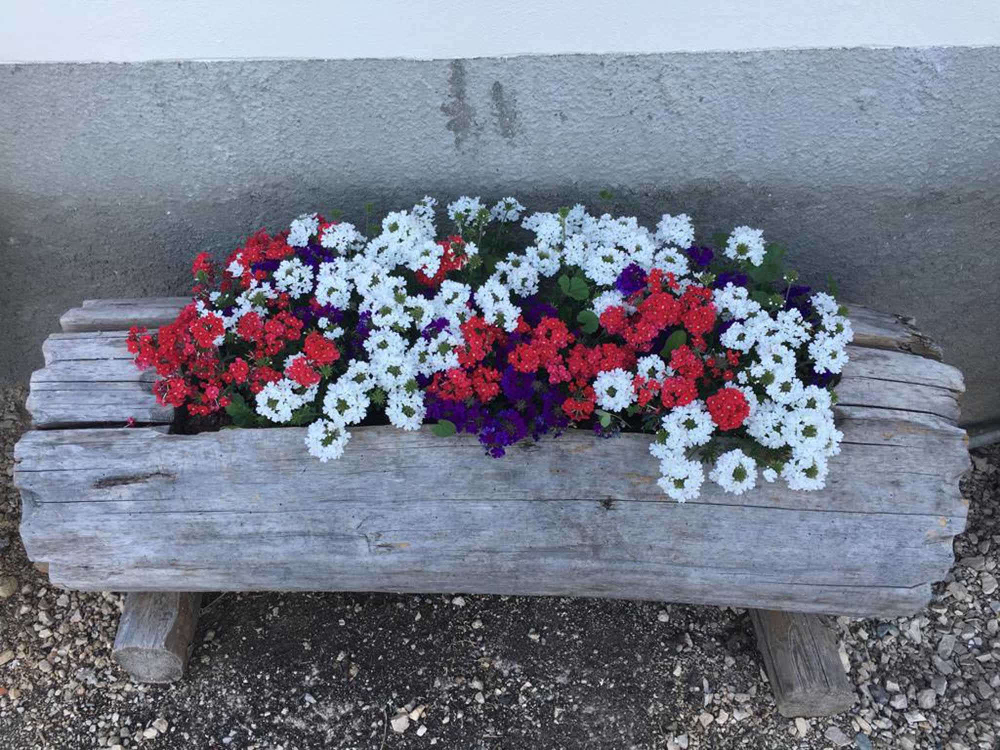

Ferienwohnung
St. Luis
Warm, modern und mit dem besonderen Charakter eines Bergbauernhofs. Viel Holz, klare Linien und ein Zuhausegefühl, das schon beim Ankommen beginnt.
2018 neu errichtetFrühstück auf WunschRuhige Lage
St. Luis anfragen →